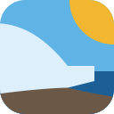
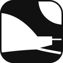
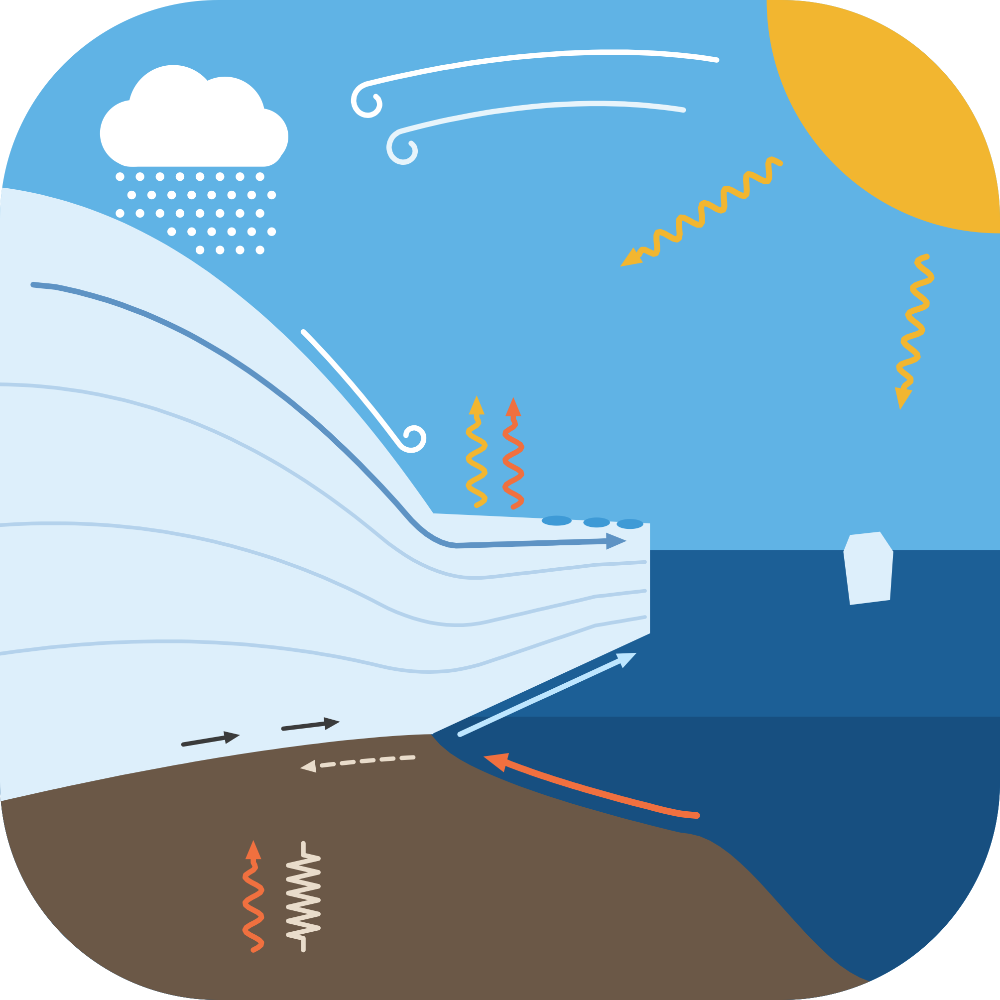

NICER graphics
Logo and illustration for the NICER doctoral network. Logos are shown at real size. Sources and build script: build.sh.
Logo
Homage to the 2007 NICE logo (melting ice tiles, sun): Wayback Machine snapshot.
Full logo
240 px
120 px
on dark
mono

icon 32

Tile: marine ice sheet on a bed below sea level, floating ice shelf, flat sea, sun in the corner. Sky in the 2007 NICE tile blue (#60B3E5), sea #1C5F96. A thin waterline continues through N and I and rises through C.
Wordmark
240 px
120 px
on dark
mono
Wordmark only, same colours and waterline.
Files
- logo/nicer-icon-mono.svg
- logo/nicer-icon.svg
- logo/nicer-logo-mono.svg
- logo/nicer-logo.svg
- logo/nicer-wordmark-mono.svg
- logo/nicer-wordmark.svg
- logo/png/nicer-icon-1024.png
- logo/png/nicer-icon-180.png
- logo/png/nicer-icon-32.png
- logo/png/nicer-icon-512.png
- logo/png/nicer-icon-64.png
- logo/png/nicer-icon-mono-1024.png
- logo/png/nicer-logo-1200.png
- logo/png/nicer-logo-3000.png
- logo/png/nicer-logo-600.png
- logo/png/nicer-logo-mono-3000.png
- logo/png/nicer-wordmark-1200.png
- logo/png/nicer-wordmark-3000.png


Illustration
Ice sheet, atmosphere, ocean and solid Earth interactions, in the logo's tile shape and palette. PNG 2008 px square (600 dpi at 85 mm); SVG sources alongside.
Unlabelled

Interactions between the ice sheet, atmosphere, ocean and solid Earth addressed in NICER. The grounding line rests on a bed that deepens inland, so its retreat (dashed arrow) can become self-sustaining.